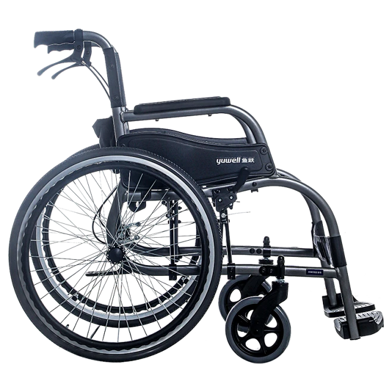
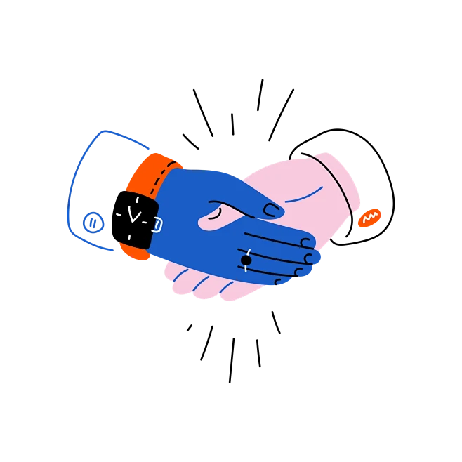
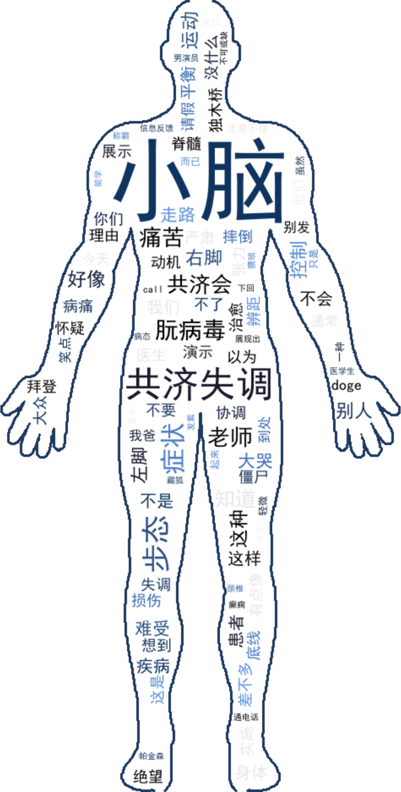
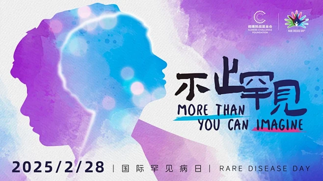

这不是贫血，不是运动损伤，不是脑震荡。这是一种被称为"脊髓小脑变性症"的罕见病——一组以进行性运动协调功能减退、平衡失调为核心表现的神经系统遗传性疾病。在中国，像亚也这样的罕见病患者超过2000万人，每年新增患者逾20万人。全球已知的罕见病超过7000种，而截至2025年6月，我国仅有207种被纳入官方罕见病目录。
亚也的故事，是这两千万分之一的故事。但她的失衡，不仅仅是身体的失衡。

这不是贫血，不是运动损伤，不是脑震荡。这是一种被称为"脊髓小脑变性症"的罕见病——一组以进行性运动协调功能减退、平衡失调为核心表现的神经系统遗传性疾病。在中国，像亚也这样的罕见病患者超过2000万人，每年新增患者逾20万人。全球已知的罕见病超过7000种，而截至2025年6月，我国仅有207种被纳入官方罕见病目录。
亚也的故事，是这两千万分之一的故事。但她的失衡，不仅仅是身体的失衡。
在中国，《罕见病定义研究报告2021》将罕见病界定为新生儿发病率小于1/10000、患病率小于1/10000、患病人数小于14万的疾病。世界卫生组织则将患病人数占总人口0.065%—0.1%之间的疾病界定为罕见病。用通俗的话说，在一个人口千万的城市里，罕见病患者可能只有几百到几千人——他们分散在城市的各个角落，彼此孤立，难以形成足够大的声量。
但"罕见"是一个相对概念。当7000余种疾病叠加在一起，当中国超过2000万患者、全球数亿患者被归在同一个标签下，"罕见"便成了一种集体性的沉重。
脊髓小脑变性症（Spinocerebellar Degeneration）是这庞大群体中的一个分支。它以小脑及神经传导通路的变性为主要特征，临床表现为肢体共济失调、构音障碍，以及一种被称为"缓慢眼动"的现象——患者的眼睛无法像正常人那样快速追踪移动物体。1973年，《美国眼科杂志》首次系统记录了这种缓慢眼动现象，而五十多年后的今天，我们仍在寻找让它停下来的方法。
如果罕见病是一张巨大的拼图，脊髓小脑性共济失调（SCA）则是拼图中最复杂的一块。
SCA属于常染色体显性遗传性小脑共济失调（ADCA），是最庞大、最常见的一类遗传性共济失调。它的病理机制像一场发生在细胞内部的"翻译错误"：相应基因外显子中的CAG三核苷酸拷贝数异常重复扩增，导致多谷氨酰胺的产生，最终引发小脑、脑干和脊髓的神经细胞进行性变性萎缩。
目前已发现的SCA亚型超过50种（SCA1至SCA50+），其中仅有7种（SCA1/2/3/6/7/12/17）可开展常规临床基因检测，其余亚型需要借助二代测序（NGS）技术，而NGS至今仍无法检测重复扩增类的SCA突变。与此同时，常染色体隐性遗传的共济失调亚型也已发现30余种。
这意味着，在亚也确诊之前，她的基因里早已写好了剧本。常染色体显性遗传模式下，父母一方携带致病基因，子女便有50%的概率遗传。更残酷的是"遗传早现"现象——疾病在世代传递中，子代的发病年龄越来越早，症状越来越重。
在中国人群中，SCA3型占所有常染色体显性遗传SCA的51.1%—72.5%，是绝对的主流亚型。而在全球范围内，SCA3也是最常见的亚型。但常见不等于被了解——在一份针对英国、德国、意大利三国患者的调查中，英国有51.6%的患者从未就诊于共济失调专科中心（SAC），德国这一比例为23.4%，意大利为19.4%。误诊、漏诊、不知该向谁求助，是SCA患者普遍面临的第一个深渊。
SCA不是突然宣判死刑的疾病，而是一场缓慢而确定的剥夺。医学上通常将其分为三期：
早期（代偿期）：发病后1—5年。
患者仅表现为步态不稳、精细动作变差，生活尚能完全自理，SARA评分（共济失调评估与分级量表）通常小于6分。这是身体还在努力"代偿"的阶段，小脑的一部分功能由其他脑区临时接管，患者可能只是觉得"最近有点笨手笨脚"。
中期（失代偿期）：发病后3—10年。
行走需要助行器，出现吟诗样语言、吞咽呛咳，丧失独立外出能力。身体的代偿机制耗尽，神经退行性变的速度超过了大脑的修复能力。
晚期（功能衰竭期）：发病10年以后。
完全不能行走，长期依赖轮椅或卧床，多伴随吞咽障碍和反复肺炎。许多患者最终需要依靠呼吸机维持呼吸，用眼球运动来操控电脑打字——那是他们与这个世界最后的连接方式。
SARA量表是目前全世界SCA研究的金标准量化工具，用来客观衡量小脑共济失调的严重程度，并跟踪每年的病情衰退速度。欧洲EUROSCA队列的全部数据都基于这个量表收集。不同亚型的进展速度差异惊人：SCA1型（早发快速型）SARA年均上升2.11分；SCA3型（普通型）年均上升1.56分；SCA2型年均1.40分；而SCA6型（晚发缓慢型）年均仅上升0.35—0.8分。
这意味着，同样是SCA患者，有人可能在十年内从行走自如坠入完全卧床，也有人能在二十年内保持相对稳定的生活质量。但无论如何，那个数字每年都在增加，像沙漏里不可逆转的流沙。
下肢与行走系统：
平衡障碍是最高发的躯体症状。在一项针对常染色体隐性小脑共济失调（ARCA）患者的调查中，12名受访者中有11人存在严重的平衡障碍，极易摔倒，做家务、饮水、外出均需扶持。路人常常误认他们醉酒。行走困难、下肢僵硬沉重（7/12）、肌肉萎缩无力（8/12）紧随其后。从青少年时期步态受限，到中年逐步依赖助行器、轮椅，活动减少还会继发肥胖，形成恶性循环。
上肢与精细动作：
9/12的患者手部精细灵巧度严重下降，穿衣、做饭、写字、开车都变得费力。肢体协调变差（6/12），无法同步完成多任务。对于曾经能弹钢琴、能刺绣、能敲击键盘的林悦来说，手指不再听话，是比不能走路更隐秘的悲伤。
言语与吞咽：
构音障碍让说话变得含糊缓慢，像含着一口永远咽不下去的水。吞咽困难（5/13）导致呛咳，患者需要调整饮食质地，一碗粥可能要喝上半个小时。社交场合的每一次开口，都可能变成一次自尊的消耗。
认知与心理：
这是最被忽视的风暴。10/12的患者存在认知损害，表现为记忆力衰退、学习新事物变慢、注意力下降、复杂问题分析困难。但极少有重度智力残疾，这意味着患者清醒地感受着自己在一点点"变笨"。4/12的患者出现抑郁，访谈中有人会落泪、会回避提问；2/12存在焦虑，担忧病情未知的进展。6/12的患者有强烈的挫败感——失去自理、失去工作、失去同龄人的生活，长期无力感伴随自责与情绪波动。
疼痛与疲劳：
疼痛（4/12）分布在颈肩腰和四肢；肌肉抽筋痉挛（5/12）影响睡眠和日常操作。而疲劳是一个"新发现"——既往文献几乎无记载，但在12名受访者中，10人存在严重的精力枯竭与耐力极差，日常、工作、运动全面受限，需频繁休息、简化任务。
社会功能的崩塌：这是最沉重的数据——12/12，全部受访者的工作都受到影响。无法胜任原有岗位、被迫调岗、提前退休、失业，伴随职场歧视与经济压力。9/12的人被迫放弃社交和户外活动，长期居家。6/12的人因亲友难以理解病情而感到孤立。5/12的人在亲密婚恋中遭遇困难。

外专科中心（SAC）的表现好得多——英国在SAC的负面反馈仅为9%和15%。
但问题是，患者很难到达SAC。在英国，25.5%停止就诊专科中心的患者是因为交通或出行困难；另有25.5%是因为中心关闭。在意大利，26.6%因为交通困难，17.8%因为认为中心无帮助。
患者们最迫切的需求是什么？
英国61.71%的人希望"完善现有治疗方案科普"；55.86%希望"获得自主管理疾病指导"；51.35%需要"日常生活适配实操建议"；49.55%呼吁"增加康复理疗可及性"。在意大利，54.17%的人要求完善治疗方案科普，53.33%希望获得自主管理指导，52.50%希望增加康复理疗可及性。

在微博和B站上搜索"罕见病"，你会看到什么？是同情，是猎奇，是"加油"的弹幕，还是一片沉默？
如果我们将网络上关于罕见病、小脑共济失调的微博博文、弹幕和新闻报道做成词云，"罕见"二字或许会占据中心位置，周围环绕着"基因""遗传""无奈""求助""天价药"等词汇。但"理解"可能很小，"日常"可能根本不会出现。
公众对罕见病的认知停留在两个极端：要么是悲情叙事中的"可怜人"，要么是医学奇谈中的"稀有病例"。很少有人知道，SCA患者智力大多正常，他们听得懂你的怜悯，也感受得到你的疏远；很少有人理解，"走路不稳"不是醉酒，而是一种神经退行性变的信号；更少有人意识到，在中国，2000多万罕见病患者就生活在我们身边。
请将鼠标悬浮在 3D 药盒上查看空间动效，点击药盒可查看孤儿药使用说明。
2025年，中国国家医保药品目录的调整，为罕见病患者带来了实质性的曙光。在新一期目录中，共新增114个药品，其中罕见病药品新增10个，占比约9%；另有3个药品通过新增或扩展适应症惠及罕见病患者。截至2025年底，医保目录中罕见病用药的累计数量达到136个，覆盖《第一、二批罕见病目录》中的69个病种。
从准入节奏来看，大部分药品从首次申报到成功纳入目录的周期不超过两年，甚至多数当年申报即可完成谈判并获得准入。过去四年（2022—2025）的数据显示，罕见病药品从通过形式审查到最终纳入医保目录的成功率约为30%——每三款提交审查的罕见病药品中，约有一款能够顺利进入医保目录。
药物本身像被抛弃的孤儿
新药研发成本极高（临床、动物试验、审批动辄数亿投入），但罕见病患者基数极小，市场规模太小，药企正常商业逻辑下无利可图，没人愿意投资研发、生产、推广，这类药物长期被药企冷落、搁置，如同没人领养的孤儿。
罕见病患者如同被忽视的孤儿
市面上几乎没有对症药物，医院、药企、社会资源很少关注，患者缺药、缺诊疗方案，长期无人照料，连带对应的药物一起被称作 “孤儿药”。
目前暂无根治SCA的特效药物，现有药物仅可以改善步态不稳、肌肉痉挛、吞咽困难等继发症状，延缓神经功能衰退速度。
该类药物需要在神经内科与康复科医生指导下长期服用，定期复查肝肾功能，不可自行增减药量。

2026年2月28日，第19个国际罕见病日到来，全球主题定为"不止罕见"（More than you can imagine）。全球各地的标志性建筑点亮粉、绿、蓝、紫四色灯光——那是属于罕见病群体的色彩，也是社会向每一个生命传递的温暖与承诺。
"摔倒也没关系，我们可以一起躺下来看云。"
数据新闻的感染力，不应建立在对真实个体苦难的剥削之上。或许，真正ethical的罕见病数据新闻，不是"为他们写作"，而是"与他们一起写作"。是让患者成为数据的共同解读，是让他们的声音穿透统计学的平均数，是让"两千万分之一"的每一个"一"，都能被看见、被记住、被尊重。
（本文数据来源于《中国罕见病定义研究报告2021》、Orphanet罕见病数据库、EUROSCA队列研究、Vallortigara等2023年发表于《Orphanet Journal of Rare Diseases》的欧洲患者路径调查、Tremblay等2022年患者报告结局研究，以及中国国家医保局2025年药品目录调整公开信息。）